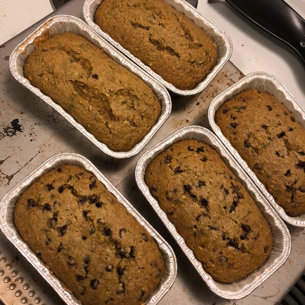

Pumpkin Zucchini Bread

Description
When a craving for zucchini bread collides with leftover pumpkin...
Ingredients
- 3 cups all-purpose flour
- 1½ tablespoons pumpkin pie spice
- 1 teaspoon salt
- 1 teaspoon baking soda
- 1 teaspoon baking powder
- 3 eggs
- 2¼ cups white sugar
- ½ cup vegetable oil
- ½ cup canned pumpkin
- 1 tablespoon vanilla extract
- 2½ cups grated zucchini
- 1 cup chopped walnuts (Optional)
Steps
- Preheat oven to 325 degrees F (165 degrees C). Grease and flour 2 8x8-inch baking dishes.
- Sift flour, pumpkin pie spice, salt, baking soda, and baking powder together in a large bowl.
- Beat eggs, sugar, vegetable oil, pumpkin, and vanilla extract together in a second bowl until mixture is smooth and creamy. Stir wet ingredients into flour mixture until combined; gently fold in zucchini and walnuts. Divide batter into the prepared baking dishes.
- Bake in the preheated oven until cakes are lightly browned and a toothpick inserted into the center comes out clean, 40 to 60 minutes. Allow to cool on rack for 20 minutes before removing from pans to finish cooling.